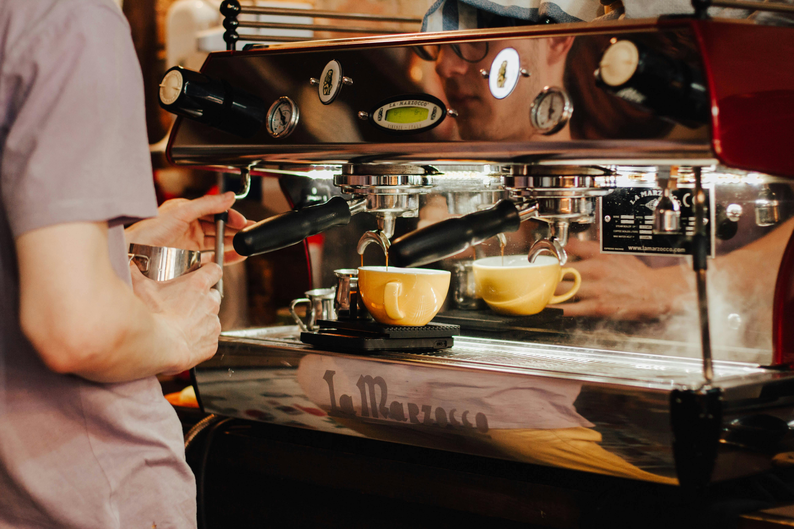

Om Kaffekvisten
Vår Historia
Kaffekvisten startade med en enkel vision – att skapa en plats där kaffeälskare och fikaentusiaster kan samlas, koppla av och njuta av handbryggt kaffe och nybakade godsaker. Sedan vi slog upp våra dörrar i hjärtat av Kaffeholm, har vi varit stolta över att kunna erbjuda en varm och välkomnande atmosfär till alla våra gäster.
Vår Kaffe-Passion
Vi tror att varje kopp kaffe ska vara en upplevelse. Därför brygger vi vårt kaffe med kärlek och omsorg, med noggrant utvalda bönor från hållbara odlingar runt om i världen. Från espresso till filterkaffe, vårt mål är att ge dig den perfekta koppen, varje gång.
Våra Bakverk
Inget kaffe är komplett utan något gott till, och vi erbjuder ett brett utbud av hembakade godsaker. Våra kanelbullar, chokladmuffins och morotskakor är bara några av favoriterna som våra stamgäster återkommer för. Allt bakas dagligen med färska ingredienser och mycket kärlek.
En Mötesplats för Alla
Kaffekvisten är mer än bara ett café – det är en mötesplats för människor i alla åldrar. Oavsett om du vill ha en lugn stund för dig själv, möta vänner för en fika, eller delta i våra regelbundna evenemang som livemusik och konstutställningar, så är Kaffekvisten platsen för dig.
Hållbarhet i Fokus
Vi bryr oss om vår planet och strävar efter att driva vårt café så hållbart som möjligt. Vi använder ekologiska ingredienser där det går, återanvänder och återvinner, samt uppmuntrar våra kunder att använda återanvändbara koppar för takeaway-kaffe.
Välkommen till Kaffekvisten!
Vi ser fram emot att få välkomna dig till Kaffekvisten – din oas för kaffe, bakverk och gemenskap. Oavsett om du är här för en snabb kaffe eller en långfika med vänner, kommer vi att göra vårt bästa för att din upplevelse hos oss ska bli så njutbar som möjligt.